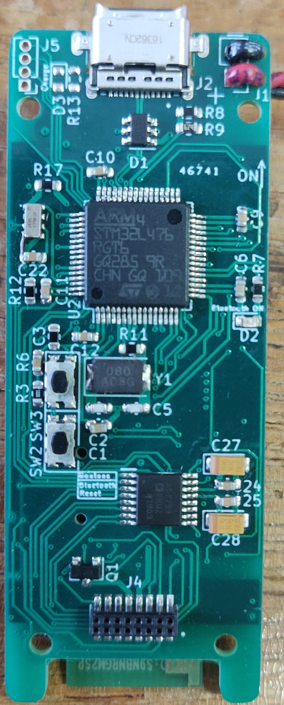

Accueil

Bienvenue dans la documentation pour le projet du laboratoire Ampère d'enregistreur de données autonome appelé "Logger".
Cette documentation est divisée en plusiers page selon le type d'information désirée. Elle se compose de la partie matérielle, la partie logicielle avec une API et des bonnes manières à prendre ainsi que les logiciels nécéssaires.